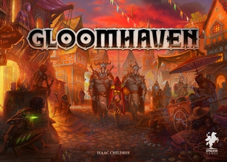
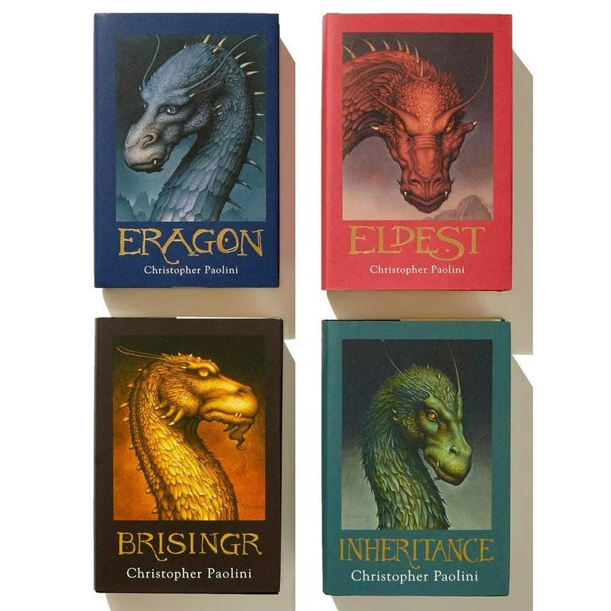

<!--
<h1>About Me</h1>
<p>I am a Software Design student at ITU who is passionate about IT. I completed my first year of the MSc 
  and completed courses in Algorithms, Functional Programming, Introduction to AI and Introduction to Database Systems.
</p>

<p>In my free time I love to read and play games (video or board games). I also study by myself, and am currently doing a 
  fullstack course on Udemy which teaches me both front and back end skills. This website is the result of a project
  from the course. 
</p>

-->

<h1>My hobbies</h1>
<ul>
  <li>Playing video games <br />
      </li>
  <li>Playing board games <br />
       </li>
  <li>Reading books and stories <br />
       </li>
</ul>